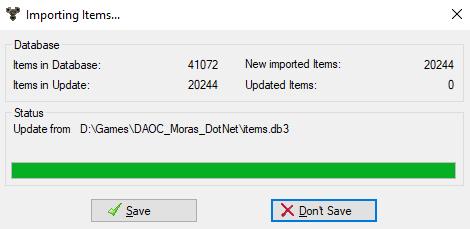

Update database

This dialog always appears when a new database is to be imported.
This can be done by calling the Import functions in the database
menu, or by calling an online update.
Closing the dialog with Ok takes over the update in the item database,
aborting it.
In database:
The number of items in the database.
Im Update:
The number of items in the file with which the update is performed.
New:
So many items from the update file are new.
Updated:
So many items from the update file are already in the item database, but
have updated values.
Status
Here is the source of the update file. This is the file name for the
database import, as well as an Internet link for an online update. An
online update also states the current state of the file download.
Online update
An online update is launched via an entry in the user options. By default,
no such options are available yet. You can install it through small
configuration files, which you can download from the corresponding web
pages and copy to the program directory.
Further information on the configuration of the configuration files can be
found in the developer documentation.